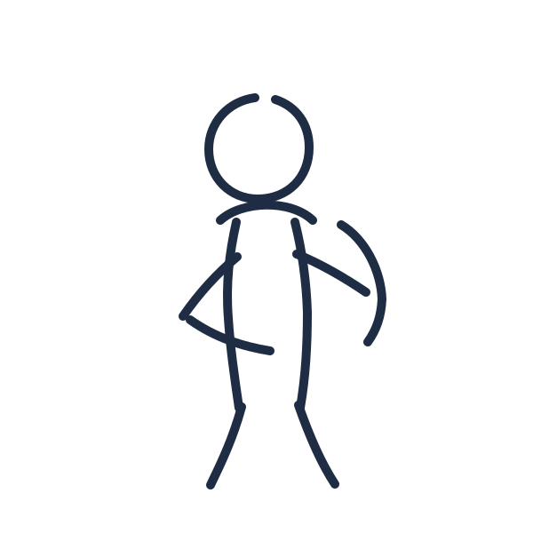
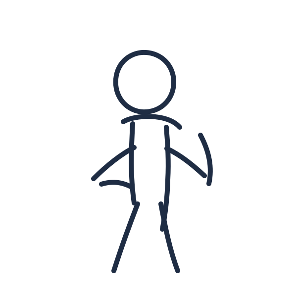
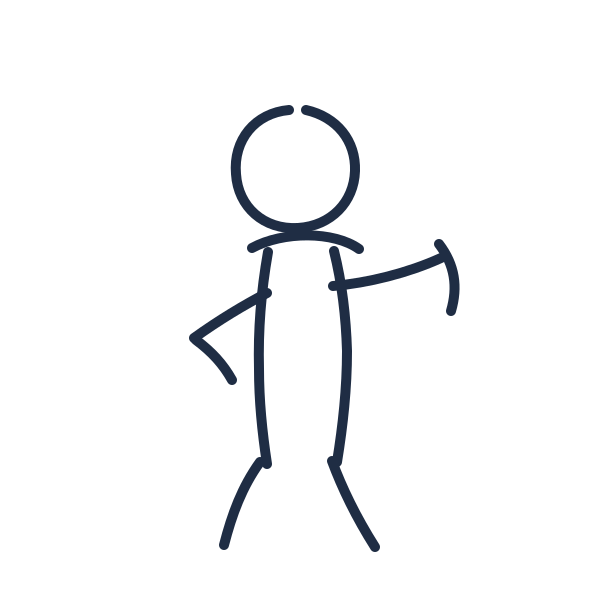
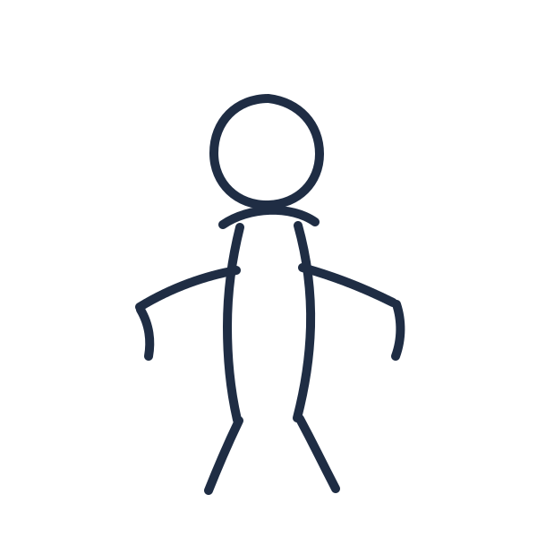

VOOR HET TNO TRAINEESHIP
Twijfel is geen vertraging. Het is werkmateriaal.
Een korte verkenning, gebaseerd op mijn Honours-onderzoek naar twijfel in innovatiepraktijk.
Lees deze projectomschrijving zoals een vormeigenaar dat doet.
Vormeigenaren zijn de mensen die de aannames van een project erven, niet bedacht hebben. Bij TNO zijn dat vaak de mensen die later in een traject instromen. Specialisten, beleidsmakers, bewoners, klanten.
We onderzoeken hoe een bedrijventerrein een kan vormen, omdat het vol zit en de verduurzamen.
0 van 5 aannames zichtbaar
Vier vormeigenaren betreden de tekening.
Elk spreekt één twijfel uit, geformuleerd als een recht. De rechten komen uit een pamflet dat ik tijdens mijn onderzoek schreef voor mensen die werken binnen organisaties die al vorm hebben gekregen.

BELEIDSMAKER GEMEENTE
Ik mag hardop twijfelen of 'lokaal' onze grens is.

NETBEHEERDER
Ik mag niet weten of 'vol' over een jaar nog klopt.

MKB-ONDERNEMER
Ik mag vroeg twijfelen of 'verduurzamen' hier hetzelfde betekent als bij ons.

BUURTBEWONER
Ik mag vragen of de hub iemand vergeet die er ook woont.
De zin is een kaart geworden. Dit is het werk waar ik bij TNO aan wil bijdragen.
Wat dit kleine ding net deed.
Bovenstaand is een werkdemo, geen presentatie. De woorden in een projectzin zijn aannames die ergens vandaan komen. Mijn werk is om die aannames zichtbaar te maken, en de mensen die ze erven uit te nodigen om er hardop over te twijfelen, in een ruimte die voor die twijfel ontworpen is. Dat is wat ik in een traineeship bij TNO verder wil leren ontwerpen.
De twee directe antwoorden.
Hoe ik impact maak.
[PLACEHOLDER, Florian schrijft hier het impactantwoord uit de slide, in iets uitgebreidere vorm.]
Wat ik over mezelf wil leren.
[PLACEHOLDER, Florian schrijft hier het leerantwoord uit de slide, in iets uitgebreidere vorm.]